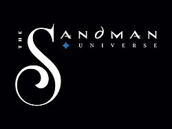

The Sandman Universe
The Sandman Universe is a line of American comic books published by DC Comics under its imprints DC Vertigo and DC Black Label. The line launched to celebrate the 30th anniversary of Neil Gaiman's The Sandman (1989—1996) and Vertigo's 25th anniversary. The Sandman Universe began in August 2018, with a titular one-shot, which was followed by four ongoing series—House of Whispers, Lucifer, The Books of Magic, and The Dreaming. Each comic is overseen by Gaiman but written by new creative teams.
| The Sandman Universe | |
|---|---|
|  | |
| Publication information | |
| Publisher | DC Comics
|
| Genre | Dark fantasy |
| Publication date | August 2018 |
| Main character(s) | |
{kind=link}
Conception and developmentEdit
The Sandman Universe celebrates the 30th anniversary of DC Comics' The Sandman[1] and the 25th anniversary of the launch of the DC Vertigo imprint. The line was conceived and is overseen by the series' creator, Neil Gaiman, but produced by new creative teams. The Sandman Universe expands The Sandman's part of the DC Universe[2] using new characters and concepts.[3] The line was announced by Entertainment Weekly in March 2018 and was accompanied by a trailer featuring Gaiman. It launched with the one-shot The Sandman Universe #1 on August 8, 2018, with the other series following on later dates.[3]
When asked why he returned to The Sandman, Gaiman said he began to feel guilty that almost no one had been able to return to the series since its conclusion and liked the idea of reviving it, as well as letting new writers play with his "toys". Gaiman assembled the writing team for the line with the Vertigo editorial team. Both parties suggested writers who they thought would be good for new Sandman stories. Samples by writers were then read by Gaiman, who decided whether or not they were proficient. Deciding writers also involved choosing which comic suited which writer best; Gaiman cited Nalo Hopkinson's science fiction work as an influence for assigning her to House of Whispers. Gaiman chose Kat Howard, who he has worked with for several years, to reboot The Books of Magic because of her handling of magic in her stories, and Dan Watters to write Lucifer because he was up to the challenge of recreating the character.[3]
TitlesEdit
The Sandman Universe began with a titular one-shot released in August 2018. It picks up after the events of DC's 2017–2018 Dark Nights: Metal crossover event. Dream has disappeared since the conclusion of Metal,[4] leading to chaos in his homeland of the Dreaming. Each Sandman Universe series follows a story thread introduced in the one-shot.[1][3][2]
| Title | Issues | Writer(s) | Artist(s) | Publication date | Format |
|---|---|---|---|---|---|
| Year One | |||||
| The Sandman Universe | #1 | Simon Spurrier, Kat Howard, Nalo Hopkinson, Dan Watters | Bilquis Evely, Tom Fowler, Dominike Stanton, Max Fiumara, Sebastian Fiumara | August 2018 | One-shot |
| The Dreaming | #1–20 | Simon Spurrier | Bilquis Evely | September 2018 – April 2020 | Monthly ongoing |
| House of Whispers | #1–22 | Nalo Hopkinson | Dominike Stanton | September 2018 – June 2020 | Monthly ongoing |
| Lucifer | #1–24[a] | Dan Watters | Max Fiumara and Sebastian Fiumara | October 2018 – | Monthly ongoing |
| The Books of Magic | #1–23 | Kat Howard | Tom Fowler | October 2018 – September 2020 | Monthly ongoing |
| Year Two | |||||
| The Sandman Universe Presents: Hellblazer | #1 | Simon Spurrier | Marcio Takara | October 2019 | One-shot |
| John Constantine, Hellblazer | #1–12 | Aaron Campbell | November 2019 – November 2020 | Monthly ongoing | |
| The Dreaming: Waking Hours | #1– | G. Willow Wilson | Nick Robles | May 2020 – | Limited series |
| Locke & Key: Hell & Gone[b] | #1– | Joe Hill | Gabriel Rodriguez | October 2020 – | TBD |
- ^ Issues #19-24 to be published only as a collected edition, in part due to the COVID-19 pandemic[5]
- ^ Crossover with Locke & Key by IDW Publishing
Collected editionsEdit
| Title | Material collected | Format | Publication date | ISBN |
|---|---|---|---|---|
| The Dreaming | ||||
| Vol. 1: Pathways and Emanations | The Dreaming #1–6; The Sandman Universe #1 | TP | June 5, 2019 | 978-1401291174 |
| Vol. 2: Empty Shells | The Dreaming #7–12 | January 8, 2020 | 978-1401295639 | |
| Vol. 3: One Magical Movement | The Dreaming #13–20 | July 8, 2020 | 978-1779502834 | |
| House of Whispers | ||||
| Vol. 1: The Power Divided | House of Whispers #1–6; The Sandman Universe #1 | TP | July 24, 2019 | 978-1401291358 |
| Vol. 2: Ananse | House of Whispers #7–12 | February 19, 2020 | 978-1401299170 | |
| Vol. 3: Watching the Watchers | House of Whispers #13–22 | October 27, 2020 | 978-1779504319 | |
| Lucifer | ||||
| Vol. 1: The Infernal Comedy | Lucifer #1–6; The Sandman Universe #1 | TP | June 19, 2019 | 978-1401291334 |
| Vol. 2: The Divine Tragedy | Lucifer #7–13 | January 22, 2020 | 978-1401295721 | |
| Vol. 3: The Wild Hunt | Lucifer #14–19 | July 28, 2020 | 978-1779502353 | |
| Vol. 4: The Devil at Heart | Lucifer #20–24 | February 2, 2021 | 978-1779507556 | |
| Books of Magic | ||||
| Vol. 1: Moveable Type | Books of Magic #1–6; The Sandman Universe #1 | TP | July 10, 2019 | 978-1401291341 |
| Vol. 2: Second Quarto | Books of Magic #7–13 | February 5, 2020 | 978-1401299040 | |
| Vol. 3: Dwelling in Possibility | Books of Magic #14–23 | February 16, 2021 | 978-1779503008 | |
| John Constantine, Hellblazer | ||||
| Vol. 1: Marks of Woe | The Sandman Universe Presents: Hellblazer #1; John Constantine, Hellblazer #1–6; Books of Magic #14 | TP | September 29, 2020 | 978-1779502896 |
| Vol. 2: The Best Version of You | John Constantine, Hellblazer #7–12 | March 30, 2021 | 978-1779509536 | |
ReceptionEdit
According to the review aggregator Comic Book Roundup, the line has an average rating of 8.9/10 based on 20 reviews.[6]
ReferencesEdit
- ^ a b Bishop, Bryan (March 1, 2018). "Neil Gaiman is turning The Sandman into an expanded comics universe". The Verge.
- ^ a b Polo, Susana (March 1, 2018). "The Sandman Universe is Neil Gaiman's next comics project". Polygon.
- ^ a b c d Holub, Christian (March 1, 2018). "Neil Gaiman announces new Sandman Universe line of comics — exclusive". Entertainment Weekly. Retrieved April 29, 2018.
- ^ Shiach, Kieran (August 10, 2018). "How Doomsday Clock & Dark Nights: Metal Affect The New Sandman Universe". Comic Book Resources. Retrieved August 10, 2018.
- ^ https://www.cbr.com/dc-lucifer-remaining-issues-canceled-straight-to-collected-edition-sandman-universe/
- ^ "The Sandman Universe Comic Series Reviews". Comic Book Roundup. Retrieved August 10, 2018.
Further readingEdit
- Lu, Alexander (March 1, 2018). "Your crash course guide to DC's new SANDMAN UNIVERSE line". Comics Beat. Retrieved April 29, 2018.
- Burlingame, Russ (March 3, 2018). "Everything We Know About Neil Gaiman's Sandman Universe So Far". ComicBook.com. Retrieved April 29, 2018.
- Marnell, Blair (March 1, 2018). "Neil Gaiman and DC Will Launch a SANDMAN UNIVERSE Line of Comics". Nerdist News. Retrieved April 29, 2018.